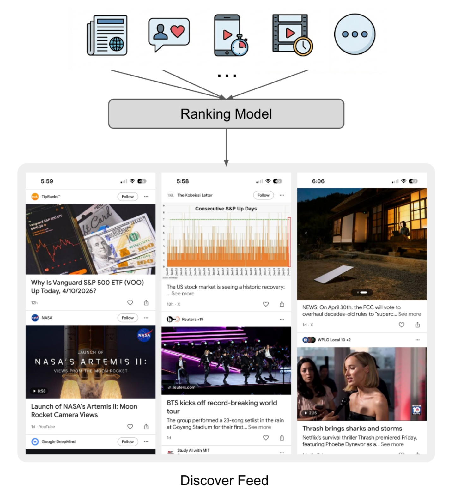
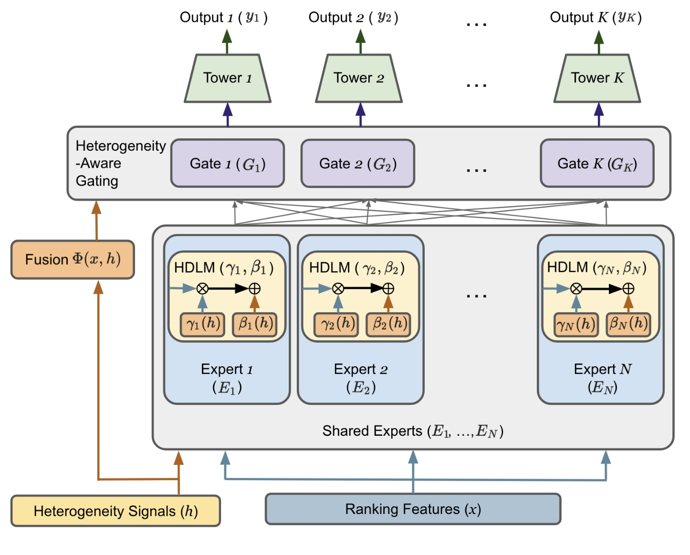
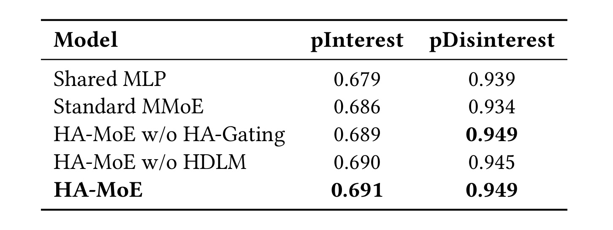
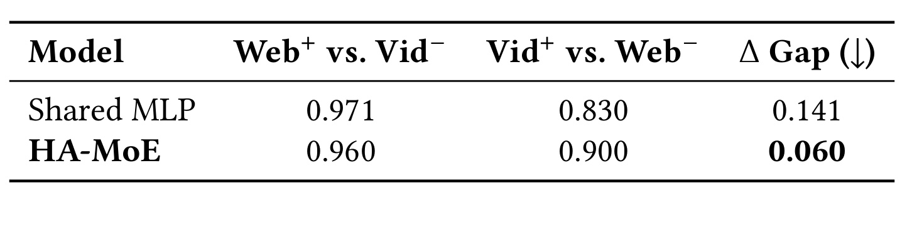
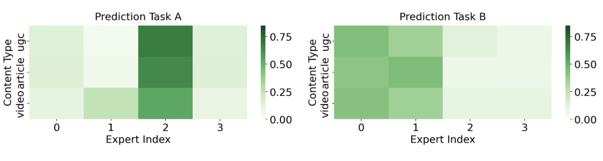
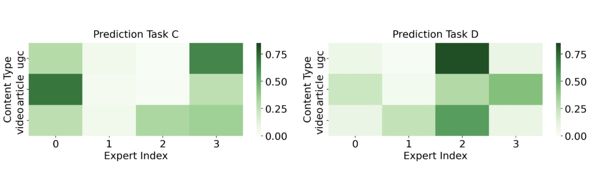
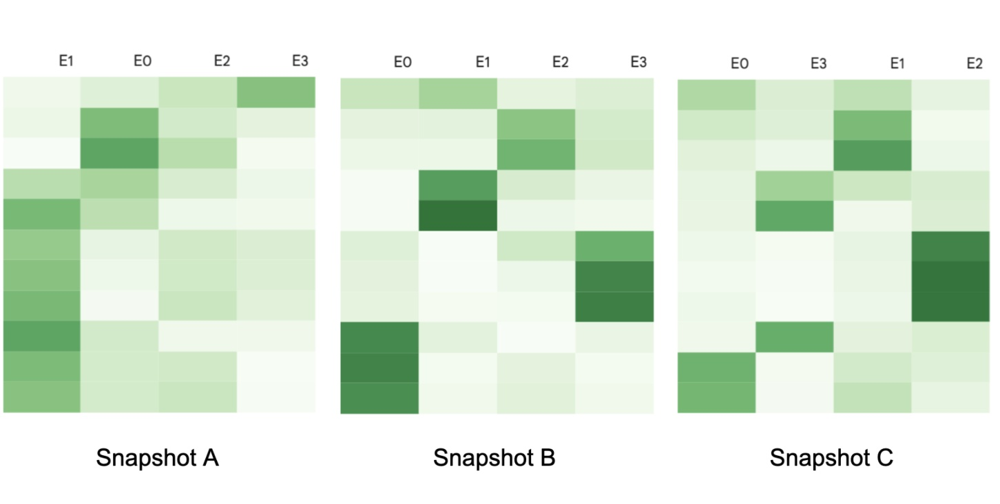
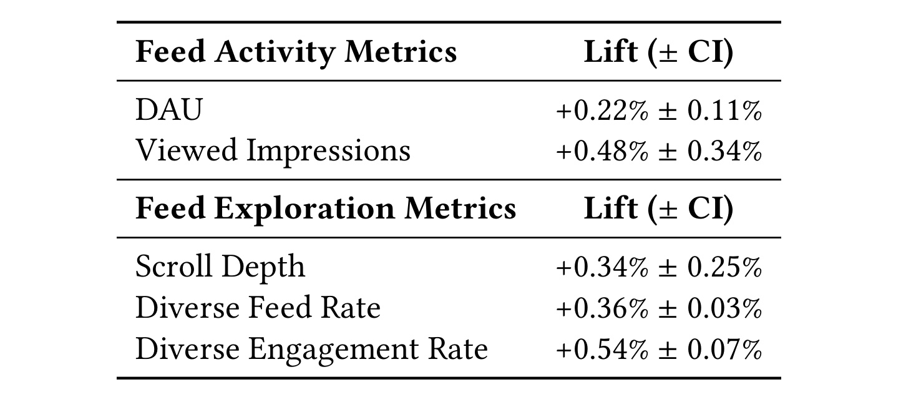

Heterogeneous Ranking in Industrial-Scale Recommender Systems: A Case Study / 工业级异质推荐排序：Google Discover 案例研究
这篇论文由 Di Bai、Jintao Liu、Zhenwei Tang、Peifan Wu、Nada Al-Thawr 与 Luoshu Wang 撰写，作者均来自 Google LLC，发表于 ACM RecSys 2026 Industry Track，arXiv v1 于 2026 年 7 月 30 日公开。论文入口为 arXiv:2607.27577，DOI 为 10.1145/3773078.3831848。本轮未核验到独立代码仓库；训练日志、评估数据、生产模型和任务定义属于 Google Discover 内部资产，不能按公开基准复现。
Google Discover 必须用一个统一排序模型处理开放网页中的文章、长短视频、UGC、体育卡片和生成式摘要，但这些内容的特征密度、元数据结构、流量规模与互动标签并不一致。单一共享表示因此容易出现分布错配、任务之间的负迁移，以及高流量内容压制少数内容类型的问题。
1. 背景和问题
1.1 Google Discover 的异质性不是普通多域差异
同质推荐平台通常控制内容生产、上传协议与交互入口：音乐服务中的条目大多具有相似的音频元数据，短视频平台也可以要求统一的时长、封面和播放反馈。即使一个 feed 同时混入广告与自然内容，工程上也常让不同 ranker 各自排序，最后用保留槽位、竞价或重排规则合并。Discover 面对的结构不同：候选来自去中心化开放网页，文章、短视频、长视频、UGC、体育卡片和生成式摘要同时进入一个统一的个性化 feed，严格的上游特征标准化并不存在。
论文把异质性拆成两个相互耦合的维度。数据异质性意味着不同内容拥有不等量、不等质的特征和历史信号：成熟文章可能有密集点击与站点先验，新格式却只有语义内容而缺少长期互动。交互异质性则意味着同一个标签并不适合描述所有内容：文章主要产生点击，视频强调消费时长，UGC 和体育卡片可能产生较长停留；点赞、点踩或 dismissal 虽然跨格式存在，基率和语义仍会变化。统一模型既要比较同类型候选，也必须判断来自不同类型的两个候选谁更值得排在前面。

Figure 1 的上半部不是简单的内容图标集合，而是在强调候选空间的来源和模态都不统一：新闻文章、社交或创作者内容、短视频、长视频以及其他新卡片先汇入同一个 Ranking Model，随后生成同一条 Discover Feed。图中没有画多个独立 ranker 再合并，这正是论文问题成立的前提。下半部三个实际 feed 截图还显示，相邻卡片的视觉形态、文本密度、媒体长度与创作者关系完全不同；它们共享曝光位置，却不共享同一种充分统计量。因而，模型不能仅把 content_type 当作普通类别特征然后期待一个共享 MLP 自动吸收差异，还必须考虑类型如何改变表征和任务冲突。需要注意，图只说明生产场景和统一链路，不代表展示出的具体新闻或视频参与了后文实验，也不提供各类型的真实流量占比。
1.2 共享底座的三种结构性失败
论文的生产基线是一个 shared MLP backbone 加 11 个任务特定 prediction heads。这些任务同时覆盖正反馈、负反馈、跨格式通用行为与格式特定行为；文中举例包括点击率、dismissal，以及仅适用于某些卡片的动作，但出于业务保密并未逐项公开 11 个任务名称、标签频率和损失权重。这样的结构服务成本低，却要求同一个隐向量满足所有内容分布和所有任务目标。
第一种失败是分布错配。如果全局样本主要来自文章，优化全局点击可能让文章分数整体偏高；低质量文章仍可能压过高质量视频或 UGC。第二种失败是多任务的 seesaw phenomenon：提升点击等正向目标时，dismissal、block 等负向目标可能退化，因为不同任务在共享参数上产生冲突梯度。第三种失败是少数类型塌缩：特征更稀、流量更小的新格式无法形成足够强的梯度，模型就把大多数容量分配给主流内容。三者并不等价。分布错配是输入与标签条件分布的问题，跷跷板是任务梯度的问题，少数塌缩则是容量利用被流量结构支配的问题；只增加一个任务头无法同时修复它们。
已有 MMoE 用任务特定 gate 缓解任务冲突，PLE 进一步分离共享和专属容量，多域模型如 STAR、PEPNet 与 M3oE 用条件参数调制适应域差异。但 Discover 的难点是要在固定模型内存、训练吞吐和在线延迟下，把内容结构上下文与任务目标同时纳入容量分配。论文因此没有选择为每种内容复制一套 ranker，也没有使用带通信开销的超大稀疏 MoE，而是在 dense MMoE 上进行两处轻量改造。
1.3 论文真正回答的三个问题与证据边界
这项工作可以读成三个连续问题。第一，怎样让显式异质信号不仅作为普通输入，还能同时决定“调用哪些专家”以及“专家产生怎样的表示”？第二，MoE 在连续 warm-start retraining 中可能交换专家编号、改变分工或发生塌缩，怎样给工程师一个不依赖标签的内部可观测信号？第三，全局 AUC 会被主流内容支配，怎样把全局效用和跨内容类型的排序正确性压缩成可用于发布决策的单一指标？对应答案分别是 HA-MoE、LENS/PIEM 和 DL-AUC。
证据边界同样重要。论文明确说，公开推荐数据集缺少 Discover 所需的内容异质性，因此所有训练、离线 holdout 和线上 A/B 都基于 Google 内部数据。这个选择增强了案例对生产约束的解释力，却削弱了外部复现与跨平台比较。后文的 DL-AUC 是作者面向 Discover 定义的产品指标，内容 segment 划分和权重都包含业务政策；线上结果也只能证明在当时的 Discover 流量、production baseline 与 guardrails 下观察到相对改善，不能推导其他推荐产品会得到同幅度收益。
2. 方法
2.1 统一多任务排序的形式化
对用户集合 \(\mathcal{U}\) 与异质候选集合 \(\mathcal{I}\)，每个 user-item 交互有两类输入：常规 dense ranking features \(x\in\mathbb{R}^{d}\)，以及显式异质上下文 \(h\in\mathbb{R}^{d_h}\)。\(h\) 可以编码 content_type、是否关注创作者、是否可购物、是否为 AI-enhanced card 等结构信号。模型同时预测 \(K=11\) 个二元任务，任务集合记为 \(\mathcal{T}=\{1,\ldots,K\}\)，输出概率向量属于 \([0,1]^K\)。论文在评估时再把这些任务归为 pInterest 与 pDisinterest 两个宏类别，但训练仍是 11 个头，而不是两个粗粒度任务。HA-MoE 包含 \(N\) 个共享 dense FFN experts 和每个任务自己的 gate、tower。对任务 \(t\)，公式（1）为：
符号解释：\(p_t\) 是任务 \(t\) 的预测概率，\(T_t\) 是任务特定 tower，\(g_t(x,h)_n\) 是该任务分给第 \(n\) 个专家的标量权重，\(\widetilde{E}_n(x,h)\) 是经过异质上下文调制的专家输出，\(N\) 是专家数。这个表达式把“专家选择”和“专家内容”分开：gate 权重决定各专家贡献比例，波浪号表示专家表示本身还会被 \(h\) 改写。HA-MoE 的核心不是仅给 MMoE 多加一个内容类型输入，而是让同一个异质上下文同时作用于路由和表示两个自由度。
2.2 HA-Gating 与 HDLM：异质上下文的双路注入

Figure 2 应沿两种颜色阅读。棕色路径把 heterogeneity signals \(h\) 与 ranking features \(x\) 融合成 \(\Phi(x,h)\)，再送入每个任务自己的 Gate；它回答“当前任务和当前内容应更依赖哪个 expert”。蓝色路径把 \(x\) 送入所有共享 experts，同时让 \(h\) 为每个 expert 产生一组 \(\gamma_n(h)\) 与 \(\beta_n(h)\)，在专家末层执行逐维缩放和平移；它回答“同一个 expert 面对这种内容时应突出或抑制哪些表征维度”。加权后的专家和最后进入任务 towers，输出 11 个预测。两条路径并非冗余：只改 gate 仍让每个 expert 输出固定语义，只改表示则缺少任务特定的容量分配；完整模型使任务、内容类型和专家三者共同决定最终表示。图中所有 experts 都被 dense 计算，这也解释了作者为何能把训练稳定性和服务开销控制在生产预算内。HA-Gating 的公式（2）是：
符号解释：\(W_t\in\mathbb{R}^{N\times d_{\Phi}}\) 和 \(b_t\in\mathbb{R}^{N}\) 是任务 \(t\) 的 gate 参数，\(\Phi(x,h)\in\mathbb{R}^{d_{\Phi}}\) 是 ranking features 与异质上下文的轻量融合表示，Softmax 保证 \(N\) 个专家权重归一化。首个生产版本直接使用拼接 \(\Phi(x,h)=[x\Vert h]\)，并非复杂 attention。重要之处在于结构位置：\(h\) 直接参与专家路由，使 video、article、UGC 或 followed creator 等 segment 能形成不同的容量使用模式。其风险是显式标签质量和分布漂移会直接影响路由；若某新格式被错误映射，gate 可能稳定地把样本送往不合适的专家。HDLM 先为每个专家计算条件仿射参数，公式（3）为：
符号解释：\(\gamma_n(h),\beta_n(h)\in\mathbb{R}^{d_e}\) 分别是第 \(n\) 个专家输出各维的缩放和偏移；\(W_{\gamma,n},W_{\beta,n}\in\mathbb{R}^{d_e\times d_h}\) 以及相应偏置是可训练参数；\(d_e\) 为专家表示维度。然后公式（4）执行实际调制：
符号解释：\(E_n(x)\) 是专家 FFN 的原始输出，\(\odot\) 表示逐元素乘法，\(\widetilde{E}_n(x,h)\) 是调制后的表示。作者把 HDLM 放在专家最后一层：位置太早会影响整个深层特征提取并增加优化不稳定，末层仿射则以较低成本改变表示坐标。对视频，它可以提升消费模式相关维度；对已关注创作者内容，它可降低全局流行度先验、强化 user-creator affinity；对缺少历史互动的新生成式摘要，它可转向语义特征。这里的“可以”是机制解释，论文没有公开逐维因果分析，因此不能把这些例子当成已验证的特征归因。
2.3 点式校准与对式排序的联合优化
仅优化 BCE 可以得到较好的概率校准，却不保证同一用户会话内正反馈候选排在负反馈候选之前；只优化 pairwise loss 又可能损害 11 个头的绝对概率。论文用公式（5）结合两者：
符号解释：\(\mathcal{L}_p\) 为 pointwise loss，\(\mathcal{L}_r\) 为 pairwise ranking loss，\(\alpha\in[0,1]\) 控制概率校准与相对排序的权衡。论文让各模型继承相同的生产超参数，包括 \(\alpha\)，以避免主结果来自重新调参。11 个头的点式目标见公式（6）：
符号解释：\(\mathcal{B}\) 是训练 batch，\(y_{t,i}\in\{0,1\}\) 和 \(p_{t,i}\) 是样本 \(i\) 在任务 \(t\) 上的标签与预测，\(w_t\) 是任务权重。初始 \(w_t\) 来自既有生产配置，训练中再依据 gradient norms 动态调整。这个机制处理的是任务梯度尺度，并不替代 HA-MoE 对内容异质性的建模。对式 RankNet 目标见公式（7）：
符号解释：\(\mathcal{B}^{+}\) 与 \(\mathcal{B}^{-}\) 是 batch 内互不重叠的正、负反馈项目集合，\(s_i,s_j\) 为 logits。实际生产中并非任意跨用户配对，而是按任务从同一用户会话的共曝光候选构造正负 pair，过滤噪声组合，缩放 logit margin，并按每个 batch 的有效 pair 数动态归一化。这些细节很关键：若把高活跃用户的正例与低活跃用户的负例随意配对，模型学到的可能是用户活跃度而非 item 排序；若稀疏任务没有足够有效 pair，归一化和任务权重也会决定梯度是否稳定。
2.4 LENS、PIEM 与 DL-AUC：从内部可观测到发布决策
MoE 的专家编号没有固定语义。两个独立训练得到同样好的模型，expert 0 与 expert 3 完全可能交换功能；直接比较参数矩阵会把编号置换误判为结构漂移。LENS 先做 Activation Slicing：抽取每个任务的 gate 激活，按内容类型切成 content-by-expert 矩阵，并对每种内容的行归一化。这样看到的是相对专家贡献，不会被 segment 绝对流量淹没。随后，PIEM 用每个专家在 11 个任务上的相对贡献组成行为向量 \(v_n\)，在两个快照间寻找最优一一匹配。公式（8）为：
符号解释：\(A,B\) 是两个模型快照，\(v_{A,n}\) 是快照 \(A\) 中专家 \(n\) 的任务行为分布，\(\sigma\) 是专家编号的排列，JSD 是 Jensen-Shannon divergence。匈牙利算法求解最小总差异的双边匹配。公式（9）再把匹配差异转成相似度：
符号解释：根号 JSD 把分布差异映射为有界距离，\(1-\) 距离表示相似度，最后对 \(N\) 个最优匹配专家对平均。PIEM 是内部功能结构的诊断信号，不是模型性能指标。 两次独立训练可能收敛到不同但同样有效的专家策略，因此低 PIEM 不必然意味着推荐质量下降；在 warm-start 连续训练中，如果数据只缓慢变化，专家匹配理应接近 identity，此时突然的大幅变化才更值得排查。罕见但真实的数据漂移仍可能导致合理的结构变化，这也是 PIEM 无法自动判因的边界。发布决策的外部指标是 DL-AUC。作者用公式（10）混合经验流量下的全局排序和等权跨 segment 排序：
符号解释：Micro-AUC 反映全局效用，Macro-xAUC 反映跨内容类型正确性，\(\lambda\) 是业务政策权重。Discover 实验设置 \(\lambda=0.8\)，即全局效用权重是跨类型项的四倍；这不是统计学推导出的普适最优值，而是产品将跨类型正确性设为安全底线的选择。全局部分由公式（11）定义：
符号解释：\(\mathcal{D}^{+},\mathcal{D}^{-}\) 是全局正负交互集合，\(\mathbb{I}\) 是指示函数。它按实际流量抽取 pair，因此大流量文章会贡献更多比较。对任意不同 segment \(A,B\)，公式（12）只考察“\(A\) 的正例能否超过 \(B\) 的负例”：
符号解释：\(\mathcal{D}_{A}^{+}\) 是类型 \(A\) 的正例，\(\mathcal{D}_{B}^{-}\) 是类型 \(B\) 的负例；xAUC 有方向，\(\operatorname{xAUC}(A,B)\) 与 \(\operatorname{xAUC}(B,A)\) 可以相差很大。公式（13）对所有有序类型对等权平均：
符号解释：\(\mathcal{C}\) 是关键内容类型集合。等权平均使少数类型不会因流量小而在聚合中消失。DL-AUC 因此能处理三类发布场景：多数类型统一抬分会伤害反方向 xAUC；真实表征改善会同时提高全局与跨类型项；只改善类型内部排序则主要提高 Micro-AUC 而不必惩罚 Macro-xAUC。它仍然是可扩展的近似，未计算精确 user-level GAUC，也不等价于长期用户价值、提供者公平或生态健康本身。
3. 实验结果
3.1 内部数据、11 个任务与可比设置
训练使用 Discover 大规模专有用户交互日志，覆盖较长时间窗口，以同时捕获短期趋势和中长期 user-item 模式；为处理类别不平衡，日志经历正例上采样与负例下采样。离线评估使用一个 7 天 holdout，约 1000 万条全球样本。11 个预测任务按语义归并为 pInterest 与 pDisinterest：前者代表点击、点赞等正向参与，后者代表 dismissal、block 等负向反馈。论文只公开宏类别和少数例子，未公开完整任务清单、每个头的样本量、任务权重与分 segment 标签率，因此“11 个任务都得到同等改善”并不是可由论文验证的结论；能验证的是聚合 DL-AUC、代表性跨类型分析和匿名任务的 LENS 画像。
所有模型沿用相同的生产优化配置，包括混合损失系数 \(\alpha\)、11 个任务权重的初值与动态调整方式。专家数从 \(\{2,4,8,16\}\) 中网格搜索，最终取 \(N=4\)；experts 是带 ReLU 的多层 FFN，采用正交初始化缓解表示塌缩，优化器属于 Adam family。对比包括 Shared MLP、Standard MMoE、移除 HA-Gating 的 HA-MoE、移除 HDLM 的 HA-MoE 和完整 HA-MoE。由于数据和训练实现不公开，这是一组控制良好的内部对比，而不是可独立重复的公开 benchmark。
3.2 离线主结果：化解正负任务跷跷板

Table 1 的阅读重点不是“完整模型每列都独占最高数字”，而是任务跷跷板是否被消解。Shared MLP 在 pInterest/pDisinterest 上分别为 0.679/0.939；Standard MMoE 把 pInterest 提到 0.686，却把 pDisinterest 降到 0.934，说明仅引入任务 gate 仍可能把容量倾向正向参与任务。完整 HA-MoE 达到 0.691/0.949，在保留正向增益时扭转负向任务回退。组件消融提供更细归因：去掉 HA-Gating 后为 0.689/0.949，去掉 HDLM 后为 0.690/0.945。也就是说，在这组聚合结果里，HDLM 对 pDisinterest 的贡献更明显，而 HA-Gating 对 pInterest 仍有增量；完整双路机制在两个宏类别上取得最均衡结果。0.949 与消融并列也提醒我们，表格精度不足以证明完整模型在每个负向子任务都显著更好，论文没有提供逐任务置信区间。

Table 2 解释了聚合分数背后的结构变化。对 Shared MLP，\(\mathrm{Web}^{+}\) 对 \(\mathrm{Vid}^{-}\) 的 xAUC 为 0.971，而 \(\mathrm{Vid}^{+}\) 对 \(\mathrm{Web}^{-}\) 只有 0.830，双向差距达到 0.141：模型很擅长让好文章超过坏视频，却常让坏文章压过好视频。HA-MoE 后，第一个方向略降至 0.960，第二个方向升至 0.900，差距收窄为 0.060。它不是让所有方向都单调增加，而是牺牲少量已占优方向的余量，显著修复历史上被压制的 Video 正例方向。这正是 Macro-xAUC 要捕捉的信号，也是不能只看全局 AUC 的原因。该例只覆盖 pDisinterest 与 Web/Video 组合，不能据此断言所有内容类型对都同样去偏；完整 segment 矩阵和样本量未披露。
3.3 生产开销与部署约束
HA-MoE 选择 dense 四专家而非大规模 sparse routing，是性能与运维边界共同决定的。相对 Shared MLP production baseline，论文报告模型大小增加低于 5%；训练速度在测量噪声范围内相当；端到端服务延迟在 p50 和 p95 上的增加均低于 0.5%。端到端口径包含完整 serving pipeline，因此不能反推 HA-MoE 层自身耗时，但足以说明首个部署版本没有突破既有内存和延迟预算。作者没有公开绝对参数量、吞吐、延迟毫秒值或硬件配置，这些比例不能用于估算另一系统的成本。
训练稳定性来自一组克制设计：直接拼接 \([x\Vert h]\) 而非更复杂 gate，HDLM 只作用于专家末层，正交初始化促进专家差异，同时继承生产损失和动态任务权重。这个选择也限制了表达力。未来的稀疏路由、更强 gate 与用户级异质上下文可能进一步提升容量，但会引入负载均衡、专家饥饿、跨设备通信和持续训练漂移等新问题。论文此处的价值在于展示一个能进入现有 serving 预算的设计点，而不是证明 dense HA-MoE 永远优于稀疏 MoE。
3.4 LENS：共享、特化与跨刷新稳定性
LENS 的 activation slicing 先选择三个关键内容类型——UGC、article、video——再按内容类型对 gate 概率行归一化。任务名称在图中匿名为 A、B、C、D：A 是跨格式通用且标签较密的行为，B 是跨格式通用但正标签稀疏的显式 survey feedback，C/D 则对应格式依赖的交互，例如进入详细视图或展开文本。匿名化保护了业务定义，却也意味着外部读者无法复核这些行为的基率与训练权重。

Figure 3 中，每幅热图的行是 UGC、article、video，列是四个专家，颜色越深表示该内容类型在相应任务上对该专家的归一化利用越高。Task A 的三行都主要集中在 expert 2，说明一个通用稠密行为可以由同一共享专家跨类型处理；Task B 则主要落在 expert 0 与 expert 1，且不同内容的强度略有差别，表明稀疏通用标签需要两组较共享的容量来吸收子模式。这里不能把 expert 2 命名为“点赞专家”，因为专家编号在另一次训练中可能改变；可解释的是功能分布，而不是固定参数身份。热图也没有误差条，因此它是结构诊断，不是激活差异显著性的统计检验。行归一化还会抹去各内容类型的绝对激活量和流量规模，所以浅色不等同于样本稀缺，深色也不等同于该专家贡献了更多线上收益。

Figure 4 与前图构成对照。Task C 中 article 强烈依赖 expert 0，UGC 更依赖 expert 3，video 则在 expert 2/3 之间分配；Task D 又出现不同格局，例如 UGC 对 expert 2 的激活最强，article 更分散到 expert 2/3。相同内容类型在不同任务上可以走不同专家，同一任务也会随内容类型改变路由，这恰好说明 HA-Gating 同时以任务和 \(h\) 为条件。图支持“模型形成了可辨认的功能分工”，但不直接证明这些深色格子造成 DL-AUC 提升。若要做因果归因，还需要专家屏蔽、路由干预或逐 segment 消融，论文没有提供这些实验。另一个待核验点是 Task C/D 的真实标签频率：如果某格式几乎没有适用标签，热图的高对比度可能同时受到样本选择和路由机制影响。

Figure 5 把列顺序按最优置换对齐后展示三个模型快照。Snapshot A 的许多任务行集中到同一两个专家，整体缺少清晰分工；Snapshot B 与 C 则呈现多组分散且相似的热点，即使顶部专家顺序不同，PIEM 仍可通过置换找到对应角色。论文据此说明 B/C 获得较高 PIEM，而 A/B 较低；A 也对应较差的评估配置。真正的工程意义在于，连续 warm-start retraining 时可在完整离线评估完成前观察内部结构是否突然偏离健康基线。仍需坚持两条边界：第一，论文未在图中公开 PIEM 的具体数值或告警阈值；第二，独立 retrain 得到低 PIEM 可能只是另一种等效专家分工，不能自动阻断发布。合理用法是把它与数据漂移、DL-AUC 和线上 guardrails 联合诊断，而不是把热图相似度当作 KPI。
3.5 线上 A/B：相对提升而非可外推绝对收益
作者在 Discover 上进行多次 7 天实验，每次覆盖 1% live traffic，对照现有 shared-MLP production baseline；Discover 的平台规模被描述为数亿日活和数十亿月活，所有实验均受标准生产 guardrails 监控。线上观察分成两组：feed activity 包括 DAU 与 viewed impressions，feed exploration 包括 scroll depth、diverse feed rate 与 diverse engagement rate。论文声称这些指标方向与离线 DL-AUC 改善一致，并未观察到其他核心运维指标回退。

Table 3 的五项点估计均为正，置信区间以“相对 production 的 lift ± 95% CI 半宽”呈现；因此它证明的是在该实验周期和该基线下，feed activity 与 exploration 的方向性改善。表格并未公开 DAU、曝光数、滚动深度或多样性比率的绝对业务水平，也未给出用户级长期留存、满意度或提供者收益，所以不能把图中百分比解释成另一产品的预期增益。论文进一步报告历史上被低估的部分流量得到缓解，用户浏览更深、看到并互动的内容类型更多，但未公开 segment 级绝对曝光变化。线上结果覆盖 11 个任务共同驱动的最终 ranker，而不是 11 个单独 A/B；因此可说统一模型经过线上验证，不能说每个任务头都被线上独立验证。
离线与线上证据的链条是：HA-MoE 在两个宏任务类别上改善 DL-AUC，Web/Video 案例显示跨类型不对称收窄，LENS 显示专家形成可观测分工，production overhead 落在预算内，最后 1% 流量 A/B 的 activity/exploration 指标向好。这条链条覆盖模型、指标、诊断与部署，但仍全部属于同一公司、同一产品和内部数据。没有公开日志、复现实验或跨平台外部效度验证时，最稳妥结论是“这是一项有完整生产闭环的 Discover case study”，而不是“HA-MoE 已被证明普遍优于所有多域推荐模型”。
4. 总结
4.1 结论与工程含义
HA-MoE 的关键贡献可以压缩为一个清晰原则：当排序对象的结构差异是已知且可编码的，异质上下文不应只作为 shared backbone 的普通输入，而应同时控制容量选择与容量语义。HA-Gating 让任务在不同内容上改变专家权重，HDLM 让每个专家在不同内容上改变末层表示；两者配合后，模型在固定预算中形成条件专门化。Table 1 的双组件消融与 Table 2 的双向 xAUC 表明，这一设计不仅抬高正向参与，还修复了负向任务和少数类型方向上的跷跷板。
同样值得迁移的是“模型—可观测性—发布指标”三件套。MoE 如果只有离线总分，专家塌缩或重训练功能漂移很难定位；LENS/PIEM 把 gate 行为变成可比较的结构画像。全局 AUC 如果直接决定发布，多数流量可能掩盖跨类型错误；DL-AUC 用 Macro-xAUC 设安全地板。对 RAG、个性化 LLM 或 agent ranking 的启发也在这里：当候选来源、工具类型或记忆片段结构不同，可以考虑以来源上下文同时调节 router 与 expert representation，并为跨来源排序单独设计诊断；但不能直接复制 Discover 的 segment、任务或 \(\lambda=0.8\)。
4.2 局限与风险
- 复现边界：数据、特征、11 个任务、损失权重和 production baseline 不公开，外部只能复现公式形态，无法复现 Discover 的真实异质分布与结果。
- 指标的产品性：DL-AUC 的内容类型集合、xAUC pair 权重和 \(\lambda\) 都是业务选择。它没有直接衡量长期满意度、提供者公平、内容质量或生态因果效应。
- 显式异质信号依赖：HA-Gating 与 HDLM 都依赖 \(h\)。标签滞后、错误映射、新格式冷启动或对抗性元数据会同时污染路由和表示，形成双重放大。
- LENS 的不可判因性：PIEM 低分既可能是塌缩，也可能是合理数据漂移或另一组等效局部最优；没有数据监控和下游指标配合时，不能自动判定故障。
- 线上外推限制：A/B 只给相对 production lift 与置信区间，不给绝对业务水平；实验周期为 7 天、流量为 1%，不能回答更长期的习惯变化和生态反馈。
- 证据粒度：离线表主要报告两个宏类别和一个 Web/Video 案例，没有公开 11 个任务逐项结果、所有内容类型矩阵、显著性检验或失败 segment。
4.3 后续跟进
第一，应在可公开数据上构造一个真正具有内容类型、特征缺失和行为标签差异的异质 benchmark，分别控制流量长尾与标签稀疏度，检验 HA-Gating、HDLM 和双路组合何时有效。第二，应做路由因果实验：屏蔽单个 expert、打乱 \(h\)、冻结 gate 或只在推理时替换 segment，区分 LENS 热图中的相关性与实际性能贡献。第三，应把 PIEM 与数据漂移、任务梯度冲突、专家负载和下游 DL-AUC 串成多变量告警，学习可操作阈值，而不是单独追求快照相似。第四，应研究更长周期和用户/提供者维度的评价，确认探索多样性提升是否伴随满意度、留存和优质少数内容供给改善。最后，如果扩展到 sparse routing、用户级 context 或 listwise/LLM-enhanced orchestration，应同时报告参数、吞吐、延迟、专家负载与跨 segment 指标，保留这篇论文最有价值的生产约束意识。